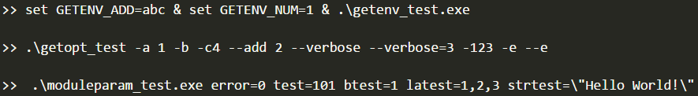
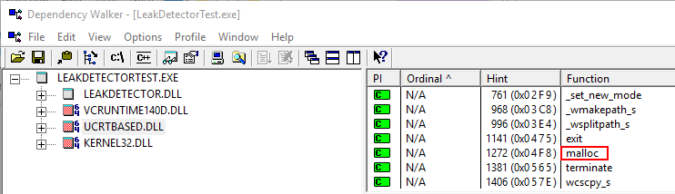
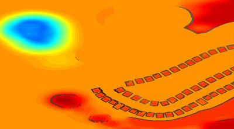

Posted by Disenone on January 12, 2024
Posted by Disenone on January 12, 2023
Posted by Disenone on November 18, 2021
Posted by Disenone on March 31, 2021
Posted by Disenone on December 17, 2019

Posted by Disenone on November 19, 2016

Posted by Disenone on June 11, 2016
Posted by Disenone on June 1, 2016
Posted by Disenone on March 30, 2014

Posted by Disenone on March 27, 2014
Posted by Disenone on March 15, 2014
Posted by Disenone on March 14, 2014
Posted by Disenone on March 13, 2014